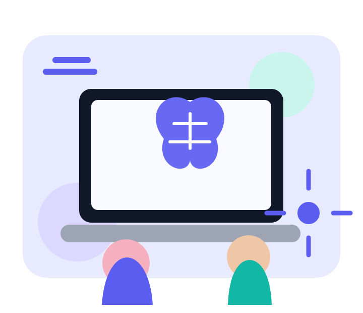
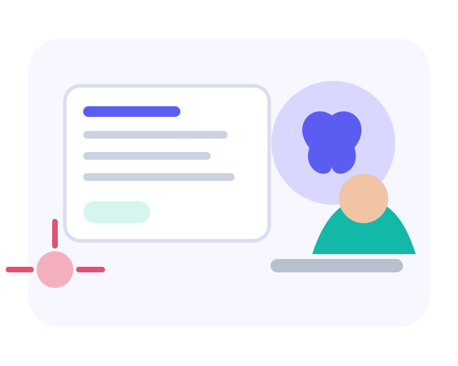

📚
Educación
Puede explicar conceptos, resumir información, ayudar a practicar idiomas y ofrecer apoyo personalizado para aprender.
La IA está cambiando la forma de estudiar, crear, comunicarse y prepararse para el futuro. Puede ser una gran herramienta, pero también exige criterio, privacidad y responsabilidad.

La IA aparece en buscadores, redes sociales, asistentes virtuales, aplicaciones educativas y herramientas que generan texto, imágenes, audio y código.
Puede explicar conceptos, resumir información, ayudar a practicar idiomas y ofrecer apoyo personalizado para aprender.
Permite generar ideas para proyectos, escribir borradores, crear imágenes y experimentar con nuevas formas de expresión.
Comprender cómo funciona la IA puede ayudar a desarrollar habilidades digitales útiles para empleos y profesiones emergentes.

Los sistemas pueden equivocarse, reproducir sesgos o presentar información inventada con apariencia convincente. Además, compartir datos personales puede afectar la privacidad.
La IA puede generar respuestas incorrectas. Es importante verificar con libros, docentes y fuentes confiables.
Si se usa para obtener respuestas sin pensar, puede reducir la práctica del razonamiento y el aprendizaje independiente.
No conviene ingresar contraseñas, direcciones, documentos, fotos privadas ni otra información sensible.
Imágenes, audios y videos generados por IA pueden utilizarse para engañar o suplantar a otras personas.
Pregunta y aprende. Úsala para comprender, no solo para copiar una respuesta.
Verifica. Contrasta datos importantes en fuentes confiables.
Protege tus datos. Evita compartir información personal o privada.
Sé transparente. Si una tarea lo requiere, indica cuándo utilizaste IA como apoyo.
“La inteligencia artificial puede ampliar nuestras capacidades, pero el criterio humano sigue siendo esencial para decidir cómo usarla.”
Idea central del sitio
Estos enlaces permiten ampliar la información con organismos y estudios especializados.
Consejos y explicación sobre aprendizaje, privacidad, sesgos y seguridad.
Visitar página ↗ UNESCOGuía internacional sobre uso ético, seguro y centrado en las personas.
Visitar página ↗ COMMON SENSE MEDIAInvestigación de 2026 sobre cómo niños y adolescentes están utilizando estas herramientas.
Visitar página ↗*Los porcentajes destacados corresponden a estudios de Common Sense Media publicados en 2026 y describen sus muestras en Estados Unidos; no representan automáticamente a todos los jóvenes del mundo.